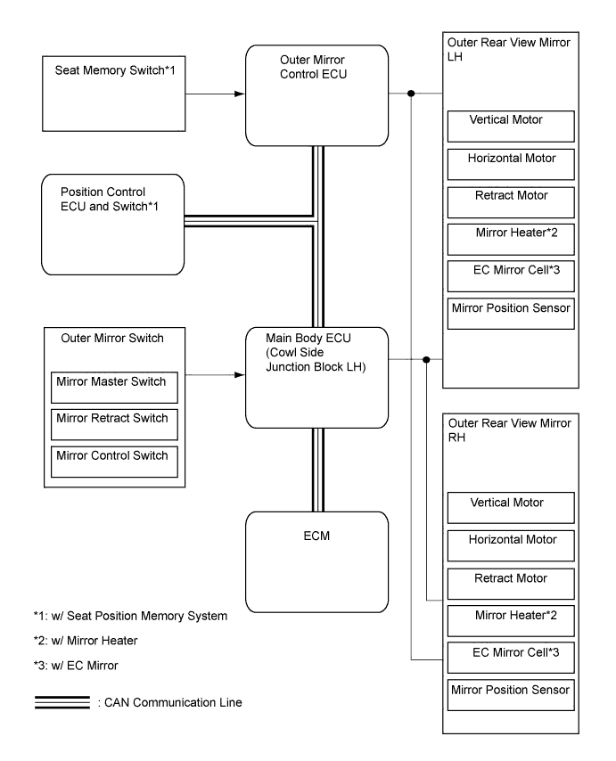

POWER MIRROR CONTROL SYSTEM (w/ Retract Mirror) > SYSTEM DIAGRAM |

| Sender | Receiver | Signal | Line |
| Main body ECU | Outer mirror control ECU |
| CAN |
| Position control ECU and switch* | Outer mirror control ECU |
| CAN |
| ECM | Outer mirror control ECU | Reverse signal | CAN |